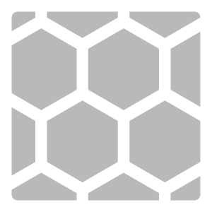

In: Tools
The Auto Tiling filter looks for repetitive structures in your material and uses them to create a tiling material. Unlike the Make it tile filter or the Tiling filter, Auto Tiling focuses on isolating the smallest area of the material that can be made to tile.
Auto Tiling is particularly useful for textiles.
In order for the Auto Tiling filter to work, a minimum of 3x3 repetitions is required in the source image or material.
When you add it to your layer stack, Auto Tiling will try to automatically find repeating patterns and generate a tiling material. If this isn't successful, you can use the Advanced settings button to manually adjust the process.
If you're planning to create a tiling material from an image, it's better to use the Auto Tiling filter first, and then use the Image to Material filter.
Auto Tiling runs completely on your device, no content is sent to the cloud.
Unlike most filters, Auto Tiling does not have parameters. Instead there is an Advanced settings button, that will take you through the process of configuring the filter. You don't need to make manual adjustments of every step, and you can skip forwards or backwards by selecting a step at the top of the window.
This process consists of the following steps:
Once you've been through all the steps, use Apply to confirm your choices. The Auto Tiling filter will process the material to generate a final result.